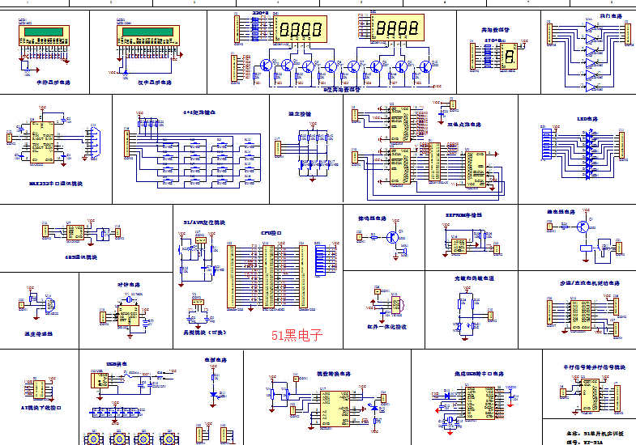

博客
首页
文章
想法投稿
文章编辑
论坛&帖吧
学习资源
关于
联系
管理员登陆
分类
基础类
基础类文章的描述。
阅读更多
进阶&复杂类
进阶&复杂类文章的描述。
阅读更多
其他
其他类文章的描述。
阅读更多
相关期刊
单片机
访问单片机相关期刊。
访问期刊
模拟仿真
访问模拟仿真相关期刊。
访问期刊
机械
访问机械相关期刊。
访问期刊
机器人
访问机器人相关期刊。
访问期刊
论坛&帖吧
交流社区
这算是一个社区，来交流一下吧！
进入
